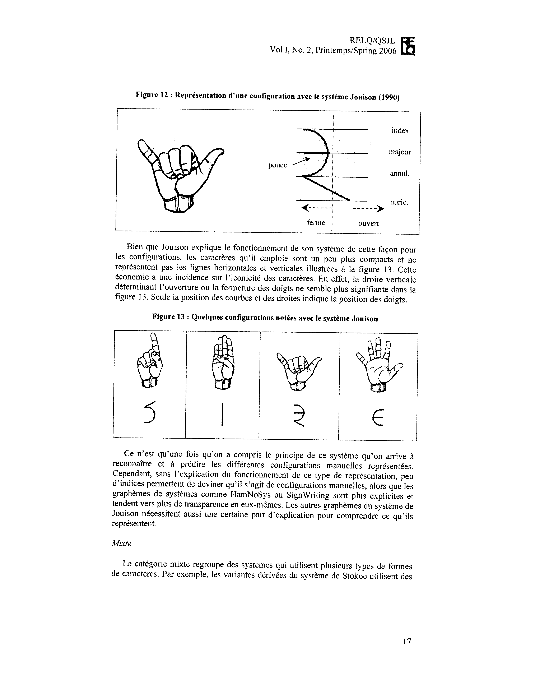

| 
| |||
Au cours des 40 dernières années, la multiplication des besoins de transcription des langues signées a amené la création de plusieurs systèmes écrits conçus pour différents objectifs comme la description des unités phonologiques ou la représentation des relations syntaxiques entre les signes. Par ailleurs, alors que les langues des signes ne sont pratiquement pas écrites par leurs utilisateurs, il existe pourtant quelques systèmes pouvant servir à l’écriture courante. Pour y voir plus clair dans toutes ces possibilités peu connues, nous présentons d’abord quelques caractéristiques des langues des signes à prendre en considération pour leur représentation écrite, telles que l’iconicité, l’utilisation de l’espace et la simultanéité. Nous proposons ensuite une typologie de systèmes écrits pour les langues des signes, classant ces systèmes selon leur niveau de représentation, les caractéristiques de leurs graphèmes et leur arrangement.
During the last 40 years, the growing needs for sign language transcription led to the creation of several writing systems designed for different goals such as the description of phonological units or the representation of syntactical relations between signs. In addition, whereas sign languages are practically not written by their users, there are however some systems that could be used for everyday writing. In order to have a clearer view of all these little known possibilities, we initially expose some characteristics of sign languages to be taken into account for their written representation, such as iconicity, use of space and simultaneity. Then, we propose a typology of writing systems for sign languages, classifying these systems according to their level of representation, the characteristics of their graphemes and their layout.
Depuis plus de 5000 ans, l’être humain écrit et différents systèmes d’écriture ont été créés pour représenter des langues orales. La « découverte » de l’existence de langues des signes (LS) pose maintenant de nouveaux défis à l’écriture. Une première tentative d’écriture de la langue des signes française (LSF) voit le jour en 1825 avec la Mimographie d’Auguste Bébian. Mais ce n’est qu’à partir des années 1960, avec les travaux de William Stokoe et de ses collaborateurs, que se multiplient les systèmes écrits pour les LS, principalement créés en fonction des différents besoins de la recherche. Paradoxalement, les LS du monde sont très peu écrites par leurs utilisateurs et, même si des systèmes d’écriture ont été créés de façon à offrir une véritable modalité écrite d’usage courant pour ces langues, ces systèmes restent encore peu connus par les sourds. Pourtant, ce ne sont pas les raisons qui manquent pour se mettre à écrire et à lire en LS, comme l’éducation bilingue des sourds, la reconnaissance des LS et de la culture sourde, etc. Il est possible que parmi les obstacles qui retardent l’adoption et l’utilisation d’une modalité écrite pour les LS, il y ait la difficulté de s’imaginer comment des LS pourraient être écrites, étant donné qu’on associe depuis longtemps l’écriture aux langues orales.
Dans le cadre de nos recherches sur l’écriture de la langue des signes québécoise (LSQ), nous nous sommes intéressés aux différentes possibilités de systèmes écrits pour les LS. Voyant à quel point les propositions de systèmes de transcription et d’écriture sont construites selon des contraintes et des buts différents, nous avons cherché à dresser un portrait d’ensemble de ces systèmes. Cet article présentera d’abord quelques caractéristiques des LS à tenir compte dans leur représentation écrite. Puis, nous proposerons une typologie de systèmes d’écriture et de transcription actuellement disponibles pour les LS. Cette typologie nous permettra de faire un tour d’horizon des moyens proposés jusqu’à présent pour représenter les LS à l’écrit selon différents objectifs et différents critères.
L’étude des LS est encore très jeune et la description de ces langues n’est que partielle. Cependant, jusqu’à présent, on a identifié les niveaux de représentation linguistique des LS et décrit les principaux composants, notamment leur système de représentation phonologique. Par exemple, dans le premier tome de ia Grammaire descriptive de la LSQ (Dubuisson et al., 1999), on décrit cette langue en fonction des sept paramètres de formation des signes suivants :
La figure 1 nous montre le signe ANNÉE-PASSÉE formé d’au moins un élément
de chaque paramètre. Dans ce signe, alors que la main non dominante n’a qu’une
configuration (poing fermé), la main dominante en a deux : d’abord le poing fermé
puis l’index tendu. Cette main fait un mouvement arrière de l’espace neutre (lieu
d’articulation de départ) vers l’épaule (lieu d’articulation d’arrivée). Pendant ce
mouvement, l’orientation de la main dominante passe de la paume orientée vers à la
gauche à la paume orientée vers l’arrière. L’index de cette main est également orienté
vers l’arrière. Juste avant le mouvement, les deux mains font contact l’une sur l’autre.
Au moment de ce contact, l’arrangement des deux mains est de telle sorte que la main
dominante est placée au-dessus de la main non dominante. Enfin, pendant le
mouvement de la main vers l’arrière, la tête se tourne vers l’épaule (comportement
non manuel).
Cet exemple nous montre qu’un même signe peut être composé d’une ou de plusieurs configurations, d’un ou de plusieurs lieux d’articulation, d’un ou de plusieurs mouvements, etc.
Chaque paramètre constitue en fait ce qu’on pourrait appeler un inventaire de phonèmes (qui sont aussi parfois appelés chérèmes dans l’étude des LS), c’est-à-dire les unités minimales non porteuses de sens de la langue. Par exemple, on a recensé 116 configurations manuelles utilisées en LSQ (Dubuisson ef al., 1999). Toutefois, il n’est pas simple de constituer une liste fermée de ces phonèmes pour chacun des sept paramètres. Ainsi, même si on parvient à identifier des mouvements et des lieux d’articulation spécifiques (surtout lorsqu’ils sont en lien avec des parties du corps), leur dénombrement est moins évident quand il s’agit de mouvements ou de lieux d’articulation associés à un endroit quelconque dans l’espace neutre. Liddell (2000) discute de ce problème pour la description des lieux d’articulation de l’espace devant le signeur et de son impact, entre autres, sur la notion d’accord verbal. L’espace dont dispose le signeur pour la production des LS est très vaste comparativement à FPespace disponible dans la cavité orale des locuteurs de langues orales. Cette première spécificité articulatoire, attribuable à la modalité, multiplie les traits phonologiques possibles, ce qui rend difficile l’inventaire des phonèmes de chacune des LS. Cette difficulté a mené quelques chercheurs, dont Cuxac (1997, 2000), à remettre en question la pertinence de l’analyse des LS selon des paramètres strictement phonologiques. Cuxac propose plutôt de considérer cette analyse du point de vue morphologique par le biais de l’iconicité (c’est-à-dire le lien entre la forme des signes et la forme de ce qu’ils représentent) dans la structure des signes et dans leur réalisation en énonciation.
Dans le signe, tous les paramètres, qu’on appelle aussi constituants structurels, n’ont pas la même importance et ne sont pas traités de la même façon. Les chercheurs s’entendent généralement pour considérer quatre paramètres majeurs, soit la configuration manuelle, le mouvement, le lieu d’articulation et l’orientation (Stokoe, 1976). Les unités minimales comprises dans chacun de ces quatre paramètres ont été les premières à être décrites et identifiées comme des phonèmes de la langue. Ce sont aussi les quatre paramètres qui interviennent dans la reconnaissance mentale des signes (Emmorey, 2002). On peut également rendre compte du contact et de l’arrangement dans la description de ces constituants. Par ailleurs, alors que tous les signes manuels requièrent nécessairement au moins une configuration, un mouvement, un lieu d’articulation et une orientation, le contact, l’arrangement et le comportement non manuel ne sont pas toujours présents en forme de citation. Par exemple, le comportement non manuel joue rarement un rôle lexical dans des signes comme ANNÉE-PASSÉE, que nous avons vu dans la figure 1. Cependant, le contexte d’un ou plusieurs signes peut impliquer la superposition d’un comportement non manuel à ces signes. Les sourcils relevés, par exemple, peuvent indiquer la surprise ou marquer la forme interrogative d’une phrase.
Mis à part le mouvement, l’ensemble des paramètres implique la simultanéité de la
production des phonèmes dans les LS. Contrairement aux langues orales, qui sont
produites par concaténation de phonèmes vocaliques et consonantiques, les signes
d’une LS sont produits avec des séries de phonèmes simultanés, réalisés par plusieurs
articulateurs à la fois, dont les mains, les bras, les épaules, le tronc, le visage. Cette
simultanéité de phonèmes est très productive et suscite des phénomènes linguistiques
absents en langues orales. Par exemple, sur le plan syntaxique, les LS permettent
l’encodage parallèle, c’est-à-dire la production simultanée de deux signes, à raison
d’un par main (Miller et Dubuisson, 1992). Sur le plan morphologique, on peut
également produire simultanément plusieurs morphèmes dans la composition, la
flexion ou la dérivation. Par exemple, on compose le signe GARAGE1 (figure 2) à
partir de deux classificateurs sémantiques, soit le CL-/V’/ dont le sens est un véhicule
et le CL-/B’/ dont le sens est une surface plate. On peut aussi fléchir un verbe en en
modifiant les lieux d’articulation en fonction de la personne grammaticale tout en
conservant la même configuration manuelle, comme avec le verbe DONNER (figures
3 et 4).
Les caractéristiques des LS soulèvent des questions différentes de celles auxquelles est confrontée la représentation écrite des langues orales. Par exemple, d’un point de vue physiologique, la parole est produite par un complexe articulatoire dont les articulateurs ne sont pas autonomes les uns par rapport aux autres dans la production des sons. L’indépendance des articulateurs impliqués dans la production des LS permet une plus grande simultanéité dans la production des différents niveaux de représentation de la langue : phonologique, morphologique, lexical, syntaxique et discursif. De plus, l’utilisation de l’espace pour établir les relations référentielles est aussi une stratégie propre aux LS. La localisation des éléments dans l’espace ou l’utilisation de marqueurs non manuels tels que la direction du regard, de la tête, des épaules et du tronc sont différents moyens d’encoder les relations entre les éléments syntaxiques en utilisant la matrice spatiale.
Il existe différents types de systèmes écrits pour les langues de signes. Ces systèmes se divisent principalement en deux catégories : les systèmes de notation et de transcription, d’une part, et les systèmes d’écriture pour un usage courant, d’autre part. Un système de transcription vise à rendre à l’écrit un ou plusieurs aspects linguistiques de la structure d’une LS. Dans les systèmes de transcription, on ne vise pas la convivialité, mais plutôt la précision. En ce sens, ils sont comparables à l’Alphabet phonétique international (APT) utilisé pour rendre compte de la phonétique et de la phonologie des langues orales. Ces systèmes sont généralement très descriptifs et n’ont pas pour objectif l’économie de lecture ou d’écriture. La nécessité d’employer de tels systèmes est apparue dès le début des recherches en LS. Le pionnier de ces recherches, William Stokoe (1960), a créé son propre système qui a connu par la suite plusieurs versions au fil des nouvelles LS étudiées et à mesure que les besoins de représentation écrite se sont précisés (Miller, 1994). À la suite de Stokoe, d’autres chercheurs ont proposé leurs propres systèmes, ce qui a enrichi lPinventaire des systèmes disponibles pour la transcription des LS (Miller, 1994) :
Cependant, la pluralité de ces systèmes et les fonctions particulières pour lesquelles ils ont été créés peuvent compliquer la diffusion et l’accessibilité des recherches de chacun, comme le note Miller (1994).
En ce qui a trait aux systèmes d’écriture, ils se distinguent des systèmes
précédents par leur objectif d’utilisation usuelle par l’ensemble des locuteurs d’une
langue plutôt que par des spécialistes seulement. Par cet objectif, ces systèmes se
comparent à l’orthographe d’une langue orale. Ces systèmes visent explicitement à
constituer une modalité écrite pour une LS et sont créés dans cette optique. Certaines
propositions, comme celle de Gérald Tilkin (Tilkin, manuscrit), cherchent à employer
les mêmes graphèmes que les systèmes pour les langues orales. Par exemple, avec le
système de Tilkin, le signe ÉCRIRE de la LSF (tel qu’illustré dans Moody, 1986)
s’écrit de cette façon : s28dd+!F-l7. La graphie de ce signe rend compte des éléments
suivants :
s28 :
Configuration /S/ (s) ; variante
digitale de l’index (2) ; paume de
la main orientée vers le bas (8)
dd+ :
Mouvement tout droit répété deux
fois (deux fois d) ; vers l’avant (+)
!F :
Contact de la main dominante (!) ;
avec l’autre main (F)
- :
Changement de main
l7 :
Main non dominante tendue,
doigts non écartés (i); paume
orientée vers le haut (7).
Ce système est composé d’une soixantaine de lettres, de chiffres et de symboles typographiques divisés en sept groupes :
Dans le système de Tilkin, toutes les associations entre les graphèmes et ce qu’il nomme des « part-de-gestes » (c’est-à-dire un chérème) sont totalement arbitraires et n’ont rien à voir avec la forme des graphèmes ou la forme des chérèmes.
D’autres propositions, comme le Sutton’s SignWriting, emploient des graphèmes iconiques plus particuliers aux caractéristiques des LS. Ces graphèmes sont bien différents de ceux utilisés pour les langues orales. La figure 6 illustre la graphie du signe ÉCRIRE (en LSF) dans ce système.
Cette graphie se décompose en trois graphèmes :
Ce graphème représente la configuration /BS/ exécutée par la
main non dominante sur le plan horizontal, la paume tournée vers
le haut, avec les doigts orientés à 45 degrés entre l’avant et le côté
droit.
|
| Ce graphème représente la configuration /1°/ exécutée par la
main dominante sur le plan horizontal, la paume tournée vers le
bas, avec les jointures métacarpiennes orientées vers l’avant.
|
| Ces deux flèches représentent un mouvement linéaire sur le
plan horizontal à 45 degrés entre l’avant et le côté droit, exécuté
deux fois.
| |
Ce signe a été écrit en fonction du point de vue du signeur, c’est-à-dire que l’image écrite du signe correspond à ce que le signeur perçoit lorsqu’il exécute ce signe et non à ce que l’interlocuteur perçoit lorsqu’il regarde le signeur. C’est pourquoi le mouvement du signe écrit semble être contradictoire avec le mouvement du signe illustré.
Devant des possibilités aussi variées de représentation écrite d’une LS, nous proposons dans le tableau 1 une typologie qui nous permettra de mieux comprendre et comparer les caractéristiques des systèmes d’écriture et de transcription disponibles pour les LS.
| Types de systèmes | Niveaux de représentation | Caractéristiques des graphèmes | Exemples de systèmes |
|---|---|---|---|
| Systèmes de transcription | Phonologique | Alphanumériques unilinéaires | Liddell-Johnson |
| Iconiques unilinéaires | HamNoSys | ||
| Semi-iconiques unilinéaires | Jouison | ||
| Mixtes dactylologiques unilinéaires | Stokoe | ||
| Sémantique | Alphanumériques unilinéaires | Gloses, Berkeley TS | |
| Alphanumériques multilinéaires | Gloses | ||
| Systèmes d’écriture | Phonologique | Alphanumériques unilinéaires | Proposition Tilkin |
| Iconiques unilinéaires | SignFont | ||
| Iconiques bidimensionnels | Sutton’s SignWriting |
Parmi les types de systèmes possibles, nous retrouvons les systèmes de transcription et les systèmes d’écriture. Cette distinction est importante à faire puisqu’elle conditionne directement l’ensemble des autres caractéristiques. Un système de transcription est généralement utilisé pour la description d’une langue, principalement dans les recherches en linguistique. Que ce soit pour des études sur la phonologie, la syntaxe, la morphologie ou la sémantique des LS, les chercheurs doivent avoir recours à un moyen quelconque de représenter la langue par écrit afin de pouvoir traiter leurs données et diffuser leurs recherches, leurs données et leurs résultats. De plus, avec l’utilisation croissante de l’informatique, notamment pour la saisie et le traitement des données et pour la synthèse des LS, le besoin d’un support écrit ne cesse de croître.
Le premier objectif des systèmes de transcription est de pouvoir rendre à l’écrit tous les détails pertinents pour la recherche et la description de la langue. La liste de ces détails peut être longue. Par exemple, on peut vouloir transcrire tous les phonèmes d’une langue, tous les traits des phonèmes, toutes les informations morphologiques et sémantiques contenues dans un mot ou un signe, etc. Ces systèmes sont donc susceptibles d’être modifiés et révisés régulièrement afin de s’adapter aux besoins de la recherche et aux données analysées.
Pour leur part, les systèmes d’écriture destinés à un usage courant par les locuteurs d’une langue ont été conçus dans un but de communication dans cette langue. Dans ce type de système, la représentation de la langue par écrit doit être assez détaillée pour que les liens soient relativement évidents entre la modalité orale et la modalité écrite. Cependant, peu de systèmes d’écriture représentent une langue avec une grande précision. Le niveau de détails de la représentation doit être suffisant pour la compréhension sans alourdir la communication. Pour les langues orales, ces systèmes équivalent à des conventions pouvant être issues d’une analyse plus ou moins approfondie de la langue à représenter et possiblement conditionnées par des facteurs politiques, historiques ou sociologiques. Une fois établies et fixées, ces conventions sont peu susceptibles de subir de changements. Avec le temps, elles tendent à s’éloigner de la langue orale représentée si aucune mesure n’est prise pour adapter régulièrement la modalité écrite à l’évolution de la modalité orale. Ce phénomène explique en partie le décalage fréquent qui existe entre une langue écrite et une langue orale.
Quelques systèmes d’écriture ont été proposés pour représenter les LS. Tout comme les systèmes d’écriture des langues orales, les systèmes d’écriture des LS ont été conçus pour représenter les signes à l’écrit avec un niveau de détails relativement limité afin de ne pas compromettre l’économie de ces systèmes et leur apprentissage par les locuteurs. Par conséquent, les systèmes d’écriture des LS comportent souvent beaucoup moins de graphèmes que ceux utilisés en transcription.
Les systèmes de transcription et d’écriture s’articulent sur un niveau de représentation, c’est-à-dire l’unité linguistique de base représentée par un graphème, comme le mot, la syllabe, la consonne, le phonème. Tout comme les systèmes d’écriture et de transcription pour les langues orales, les systèmes écrits pour les LS peuvent aussi avoir différents niveaux de représentation. Dans l’état actuel des recherches sur les LS, on distingue principalement deux niveaux de représentation pour les systèmes écrits, soit le niveau phonologique et le niveau sémantique. Dans les systèmes basés sur le niveau phonologique, les graphèmes représentent des phonèmes. Par conséquent, un signe doit être écrit avec des graphèmes représentant l’ensemble des phonèmes de ce signe. On aura alors dans un même système une série de graphèmes pour représenter les configurations manuelles, une autre série pour les lieux d’articulation, une autre série pour les mouvements, etc.
Les systèmes basés sur le niveau sémantique, pour leur part, représentent principalement le sens des signes. Ces systèmes sont principalement utilisés lorsqu’il n’est pas utile de transcrire le niveau phonologique dans une recherche, par exemple dans des analyses sur des aspects syntaxiques, morphologiques ou discursifs. Ces systèmes permettent seulement une représentation des unités porteuses de sens, sans distinguer les unités non porteuses de sens. À notre connaissance, aucun système d’écriture proposé pour les LS n’est basé sur le niveau sémantique. Ce niveau de représentation semble exclusivement utilisé en transcription.
Outre le type de système et le niveau de représentation, les systèmes d’écriture et de transcription pour les LS présentent d’autres caractéristiques quant à l’aspect et à l’arrangement des graphèmes utilisés. L’aspect des graphèmes réfère à la forme graphique des caractères utilisés par un système. Cette forme peut découler du type de relation (arbitraire ou motivée) entre les graphèmes et les unités linguistiques représentées. Dans notre analyse, nous aborderons les aspects alphanumérique, dactylologique, iconique, semi-iconique et mixte.
Un système d’écriture ou de transcription peut être considéré alphanumérique quand son inventaire de graphèmes est composé de lettres, de chiffres et parfois d’autres caractères typographiques courants comme la barre oblique, le tiret, etc. Aïnsi, dans un système alphanumérique, les graphèmes sont souvent limités à ce qu’on peut retrouver dans la norme ASCII (American Standard Code for Information Interchange), c’est-à-dire la table de codage de 128 caractères utilisée couramment en informatique. Les raisons qui motivent le choix de ce type de graphème pour un système d’écriture ou de transcription d’une LS découlent surtout du souci de disposer d’un système pouvant être utilisable sur un ordinateur avec des logiciels courants de traitement de texte ou de données, sans nécessiter de logiciels spécialisés et spécifiques à l’écriture ou à la transcription en LS. Dans les systèmes alphanumériques, la forme des graphèmes a généralement peu ou pas de lien avec la forme des phonèmes.
Dans les systèmes de transcription, le recours à des caractères alphanumériques induit souvent des références à la langue orale des chercheurs. Par exemple, Île système de Liddell et Johnson décrit certaines caractéristiques du mouvement avec des abréviations comme « str » (straight, en ligne droite), « rnd » (round, arrondi), « arc » (en arc de cercle) ou « acc » (accéléré). Les systèmes à gloses, pour leur part, font franchement référence à la langue orale en y empruntant des mots ayant un sens similaire aux signes décrits. Par exemple, dans les figures 5 et 6, nous avons identifié le signe illustré par le mot ÉCRIRE écrit en majuscules. Cette glose peut donc représenter ce signe par le recours à un mot d’une langue orale ayant le même sens. Les systèmes alphanumériques, en plus d’être conçus pour des fins de compatibilité avec les outils informatiques servant aux recherches, peuvent donc aussi inclure des indications mnémoniques, comme des références à des mots de langues orales, pour en faciliter l’apprentissage et l’utilisation. La représentation des LS par ces systèmes peut donc passer par une description des signes à l’aide de références provenant de langues orales. Il est à noter que dans les systèmes aiphanumériques que nous connaissons, seuls les systèmes de transcription utilisent des références à des langues orales. Le système d’écriture alphanumérique (la proposition de Tilkin) que nous avons inclus à notre typologie ne comporte pas de références aux langues orales. Le choix de caractères alphanumériques dans ce système répond seulement à des besoins de compatibilité informatique. La relation entre les graphèmes et les phonèmes est généralement arbitraire,
A | B | /AS/ | /A"/ |
L’aspect iconique d’un système d’écriture ou de transcription découle du fait que le graphème représente un phonème en en illustrant la forme. Ainsi, la forme du graphème réfère à la forme du phonème représenté. Il est important de distinguer le caractère iconique ou arbitraire de la relation entre un graphème et un phonème du choix arbitraire d’un graphème pour représenter une unité linguistique quelconque. Dans notre analyse et notre discussion, lorsque nous parlons d’iconicité ou d’arbitraire, nous ne le faisons qu’en fonction de la relation entre un graphème et ce qu’il représente. La notion de choix arbitraire entre plusieurs graphèmes possibles, qu’ils soient iconiques ou non, pour représenter une unité linguistique n’est pas pertinente pour notre propos puisque ce choix est invariablement arbitraire, peu importe le type de relation (arbitraire ou motivée) entre les graphèmes et ce qu’ils représentent.
Le degré d’iconicité peut être variable selon le système. Par exemple, les systèmes
SignWriting et HamNoSys représentent les configurations manuelles par des dessins
de la main ayant une forme similaire à celle des configurations représentées, ce qui
exprime l’iconicité relativement directe de ces systèmes. Les figures 8 et 9 illustrent
des configurations dans ces systèmes. Le système SignFont, pour sa part, opte pour
une iconicité plus métonymique, c’est-à-dire que le graphème tend à représenter la
partie la plus signifiante (comme les doigts sélectionnés) ou la plus saillante du
phonème. Par exemple, dans les configurations manuelles illustrées dans la figure 10,
seuls les doigts significatifs des configurations sont représentés par les graphèmes,
sans que l’ensemble de la main ne soit nécessairement inclus dans la représentation.
En fait, tout ce système est conçu en fonction de maintenir un compromis entre une
certaine iconicité et une économie du nombre de graphèmes représentant les
constituants les plus signifiants des signes. Le système SignFont constitue réellement
un système d’écriture, au sens où il cherche à représenter à l’écrit les aspects
importants d’une langue sans offrir une représentation phoñologique détaillée, alors
qu’un système de transcription comme HamNoSys vise au contraire à transcrire tous
les détails du comportement des articulateurs, sans considérer Pimportance du facteur
de l’économie de lecture et d’écriture.
Nous n’avons illustré que la représentation écrite des configurations, mais les graphèmes iconiques de ces systèmes permettent aussi de représenter chacun des éléments phonologiques (les mouvements, les lieux d’articulations, etc.), comme le montre la figure 11.
Dans cet exemple, on peut remarquer le contraste entre l’approche analytique de HamNoSys et l’approche synthétique de SignWriting. Dans la première paire de crochets [ ], la notation HamNoSys rend compte de la configuration de chaque main et de l’orientation des mains. Par exemple, les quatre graphèmes signifient respectivement que la main dominante prend la configuration /VS/, que les doigts sont orientés vers le haut et vers la gauche du signeur, et que la paume est orientée à 45 degrés entre l’avant et le bas. La main non dominante est décrite de façon aussi précise ( : « configuration /B’/ », « doigts orientés vers l’avant-droite », « paume orientée vers le signeur »). La graphie en SignWriting comporte moins de précision et met les graphèmes en relation entre eux pour représenter une part des composantes du signe. Par exemple, en SignWriting, chaque configuration est représentée par un graphème ressemblant à la forme des mains, mais l’orientation de la paume est intégrée à ces graphèmes par la couleur de ceux-ci (noir et blanc, par contraste à blanc seulement pour « paume vers le signeur » et noir seulement pour « dos de la main vers le signeur ») plutôt que par des graphèmes supplémentaires. De plus, l’orientation des doigts est donnée par l’arrangement des graphèmes (les doigts de la main dominante sont orientés vers la main non dominante) plutôt que par une description géométrique de cette orientation (« vers le haut et vers la gauche »). Le même principe vaut pour le lieu d’articulation. En HamNoSys, les graphèmes décrivent le lieu d’articulation comme étant « devant le signeur » et « près du corps », alors que cette information est donnée en SignWriting par la position des configurations manuelles sous le graphème de la tête (qui indique aussi la direction du regard vers la main non dominante, une information qui n’est pas donnée en HamNoSys). L’absence de graphèmes représentant un contact ou une partie du corps précise implique que le signe est exécuté dans l’espace neutre. Enfin, le mouvement est représenté en HamNoSys par les graphèmes . La flèche pointée vers le bas signifie « mouvement vers le bas », la flèche pointée vers la droite avec queue en V indique un changement de paramètres à être précisé par les graphèmes suivants, les deux graphèmes subséquents précisent ce changement en donnant une nouvelle orientation : « doigts orientés vers la gauche du signeur » et « paume vers le bas ». De plus, le graphème « + » indique que ce qui est indiqué entre crochets est répété une autre fois. En SignWriting, les deux flèches à double barre représentent le même mouvement vers le bas répété deux fois, d’où la répétition des flèches (par contraste, deux flèches à barre simple orientées de la même façon auraient représenté un mouvement vers l’arrière répété deux fois). Le changement d’orientation de la main qu’implique ce mouvement n’est pas précisé, puisqu’il n’ajoute pas de sens au signe.
Nous avons identifié le système Jouison (1990) comme étant semi-iconique, car
bien que la forme de ses graphèmes soit déterminée par la forme des phonèmes, cette
iconicité n’est pas aussi transparente et intuitive que celle qu’on peut retrouver dans
des systèmes comme HamNoSys ou SignWriting. En fait, l’iconicité du système
Jouison est plutôt interne au système. Par exemple, comme le montre la figure 12, les
configurations sont représentées sur un patron imaginaire composé de quatre lignes
droites horizontales, un peu à la manière d’une portée en écriture musicale, et d’une
ligne droite verticale. Chaque ligne horizontale sert à ancrer un doigt, avec l’index sur
la ligne la plus haute et l’auriculaire sur la ligne la plus basse. La ligne verticale sert
de division entre les doigts dits « fermés » et les doigts « ouverts ». À partir de ce
patron, on dessine des courbes et des droites selon l’état des doigts. Un demi-cercle
avec la courbure orientée vers la droite sert à représenter un ensemble de doigts
fermés. Cet ensemble est défini par la position de ce demi-cercle sur le patron de
lignes horizontales. Ainsi, dans la figure 12, ce demi-cercle recoupe les trois
premières lignes du haut, ce qui signifie que l’index, le majeur et l’annulaire sont
repliés. De la même façon, un demi-cercle avec la courbure vers la gauche représente
un ensemble de doigts ouverts et écartés. Une droite verticale représente un ensemble
de doigts ouverts et collés. Une ligne oblique représente deux doigts consécutifs dont
l’un est ouvert et l’autre, fermé. Par exemple, une oblique comme celle-ci « / »
signifie que le doigt du haut est ouvert et celui du bas est fermé, alors que cette
oblique « \ » représente le contraire. Sur la figure 12, une ligne oblique « \ » relie
lannulaire et auriculaire, signifiant que l’annulaire est fermé alors que l’auriculaire
est ouvert. Au milieu de cet ensemble de courbures et de droites peut figurer le pouce.
Celui-ci n’est représenté par une ligne droite horizontale que lorsqu’il est ouvert. S’il
est fermé, la configuration ne comporte aucune indication sur le pouce.

index
majeur
pouce
annul.
auric.
fermé
ouvert
Bien que Jouison explique le fonctionnement de son système de cette façon pour
les configurations, les caractères qu’il emploie sont un peu plus compacts et ne
représentent pas les lignes horizontales et verticales illustrées à la figure 13. Cette
économie a une incidence sur l’iconicité des caractères. En effet, la droite verticale
déterminant l’ouverture ou la fermeture des doigts ne semble plus signifiante dans la
figure 13. Seule la position des courbes et des droites indique la position des doigts.

Ce n’est qu’une fois qu’on a compris le principe de ce système qu’on arrive à reconnaître et à prédire les différentes configurations manuelles représentées. Cependant, sans l’explication du fonctionnement de ce type de représentation, peu d’indices permettent de deviner qu’il s’agit de configurations manuelles, alors que les graphèmes de systèmes comme HamNoSys ou SignWriting sont plus explicites et tendent vers plus de transparence en eux-mêmes. Les autres graphèmes du système de Jouison nécessitent aussi une certaine part d’explication pour comprendre ce qu’ils représentent.
La catégorie mixte regroupe des systèmes qui utilisent plusieurs types de formes
de caractères. Par exemple, les variantes dérivées du système de Stokoe utilisent des
caractères alphanumériques pour représenter les configurations, des caractères plus
iconiques pour représenter certains mouvements et certains lieux d’articulation ainsi
que d’autres caractères plus arbitraires ou plus opaques pour représenter d’autres
aspects des signes, comme le contact ou le comportement non-manuel. La figure 14
illustre la phrase « Papa Ours lit le journal » signée en ASL, similaire en LSQ.
Chaque signe est transcrit en système Stokoe. On peut remarquer que les
configurations sont représentées par des chiffres et des lettres (par exemple, la
configuration de PAPA avec tous les doigts ouverts et écartés est représentée par 5, la
configuration de OURS avec les doigts courbés et écartés est représentée par C, etc.)
les lieux d’articulation sont représentés par des caractères plus iconiques (le front de
PAPA par un demi-cercle, le tronc de OURS par une paire de crochets} et d’autres
aspects des signes sont représentés par des graphèmes plus opaques (le contact glissé
des mains sur le tronc dans OURS est représenté par un x minuscule, le mouvement
d’écartement des bras dans JOURNAL est représenté par le symbole mathématique
de division).
Papa Ours lit le journal.
PAPA
OURS
JOURNAL
LIRE
La description des aspects des graphèmes nous amène à aborder le type de relation qui peut exister entre les graphèmes d’un système et les unités linguistiques (phonèmes, morphèmes, etc.) qu’ils représentent. Pour notre analyse, nous pouvons retenir quatre types de relations entre les graphèmes et les unités linguistiques : l’iconicité transparente, l’iconicité schématique, la mnémonicité et l’arbitraire. L’iconicité transparente se définit comme une relation évidente entre la forme d’un graphème et la forme de ce qu’il représente. Le SignWriting fonctionne de façon très iconique, autant dans la forme des graphèmes que dans leur disposition sur papier (voir section suivante). L’iconicité schématique s’apparente à l’iconicité transparente en ce sens que la forme d’un graphème peut permettre de prédire la forme de ce qui est représenté. Cependant, ce type de relation est soumis à un ensemble de règles de construction des graphèmes permettant de faire l’analogie entre la forme du graphème et la forme de l’unité linguistique représentée. Si on ne connaît pas ces règles, la forme de cette unité peut être difficile à déduire de la forme du graphème. Le système de Jouison est un bon exemple de système où les graphèmes sont une sorte de schématisation de la forme des phonèmes qu’ils représentent. Une relation mnénomique entre un graphème et une unité linguistique découle d’indices, autres que celui de la forme, portés par le graphème à propos de ce qui est représenté. Par exemple, les systèmes utilisant des caractères alphanumériques pour représenter des configurations manuelles faisant partie de l’alphabet manuel (comme les systèmes inspirés de Stokoe) peuvent être considérés mnémoniques, car même si la forme du graphème n’a rien à voir avec la forme du phonème, ce graphème représente une lettre ou un chiffre également représenté par cette configuration dans l’alphabet manuel. La mnémonicité découle donc de la parenté de ce que le graphème et l’unité linguistique représentent respectivement. Enfin, dans une relation arbitraire, rien ne motive l’emploi d’un graphème plutôt qu’un autre pour représenter une unité linguistique. Par exemple, dans le système de Tilkin illustré à la figure 5, l’association des graphèmes et des phonèmes n’est faite qu’à partir du jumelage de deux listes, chacune étant ordonnée de façon arbitraire.
En plus de recourir à différents types de graphèmes, les systèmes d’écriture et de transcription divergent également par leur façon d’organiser et d’arranger les graphèmes sur papier. Nous avons relevé trois types d’arrangement : unilinéaire, multilinéaire et bidimensionnel.
Un système est unilinéaire lorsqu’il arrange ses graphèmes sur une seule ligne,
comme le font les systèmes d’écriture et de transcription pour les langues orales. La
plupart des systèmes d’écriture et de transcription pour les LS sont aussi unilinéaires.
Cet état de fait découle probablement de deux causes. La première est que nous avons
l’habitude d’écrire de façon unilinéaire et la deuxième est que les outils informatiques
d’emmagasinage et de traitement de données, utilisés dans l’étude des LS,
s’accommodent beaucoup mieux d’un arrangement unilinéaire que multilinéaire ou
bidimensionnel. La figure 15 illustre une transcription linéaire en HamNoSys. La
figure 16 montre l’apparence d’un texte linéaire signé en LSF (dont nous n’avons pas
la traduction) et transcrit avec le système Jouison.
Papa Ours lit le journal.
PAPA
OURS
JOURNAL
LIRE
La linéarité du système engendre une transcription plus descriptive en ce sens qu’en lisant un graphème après l’autre, on reconstruit le signe étape par étape. La forme globale du signe n’est accessible que lorsque toutes les informations transcrites pour ce signe ont été lues successivement. De cette façon, un système linéaire peut commencer par transcrire la configuration manuelle, puis son lieu d’articulation, puis son action. En fait, l’ordre des composantes du signe peut différer d’un système de transcription à l’autre.
Un système est multilinéaire quand il permet d’écrire un signe ou un énoncé en LS sur plusieurs lignes simultanément. Par exemple, on peut avoir un système qui utilise une ligne pour la main dominante (Md), une ligne pour les deux mains (2m), une ligne pour la main non dominante (Mnd) et une ligne pour la traduction, comme dans la transcription en gloses donnée ici et tirée de Parisot (2003).
(2)
Md PONT(byz) BICYCLETTE-TRAVERSER(yz)
2m AUTOROUTE(a) BICYCLETTE(c)
Mnd
Sens : La bicyclette traverse le pont au-dessus de l’autoroute.
Dans un autre exemple, tiré de Dubuisson er al. (1999), la transcription peut donner le comportement manuel sur la ligne du bas et le comportement non manuel sur la ligne du haut. On peut noter que, dans cette phrase, le seul moyen de savoir qu’il s’agit d’une interrogative est de disposer de la transcription du comportement non manuel, soit les sourcils relevés (SR) et la tête inclinée vers le bas (↓) pendant toute la durée de la phrase (gloses surlignées). Autrement, elle pourrait être interprétée comme une affirmative.
(3)
SAVOIR PTÉ2 PTÉ1 SR, ↓
ÉTUDIER
Sens : Tu sais que j’étudie?
Certains systèmes ont adopté un arrangement multilinéaire afin de pouvoir rendre compte de l’action simultanée des articulateurs puisque cette simultanéité semblait moins évidente à transcrire avec des systèmes unilinéaires. Le fonctionnement de l’écriture multilinéaire rappelle celui de l’écriture musicale sur des portées permettant de voir aussi bien l’enchaînement des notes que les notes jouées simultanément. À cet égard, un système multilinéaire peut rendre compte d’une certaine part de simultanéité dans les signes en regroupant des articulateurs sur plusieurs lignes.
Un système bidimensionnel représente les signes en disposant les graphèmes sur
un plan à deux dimensions plutôt que sur une seule dimension (comme les systèmes
uni- où multilinéaires). Dans l’exemple de SignWriting donné à la figure 17, les
différents graphèmes sont disposés sur une surface bidimensionnelle de telle sorte que
leur arrangement rend compte de l’organisation spatiale des phonèmes dans la
production d’un signe. La figure 18 illustre la paire minimale des signes PAPA et
MAMAN, qui se distinguent uniquement par leur lieu d’articulation.
Papa Ours lit le journal.
PAPA
OURS
JOURNAL
LIRE
Dans le signe PAPA, le bout du pouce touche le côté du front, alors que dans le signe MAMAN, il touche le côté du menton. La version écrite en SignWriting de ces signes rend compte de cette différence précisément par la position de la main par rapport à celle de la tête (il est à noter que le comportement non manuel peut ne pas être noté, en SignWriting, s’il n’est pas pertinent au sens du signe). L’arrangement des graphèmes tend ici à donner une illustration synthétique des signes plutôt qu’une description analytique et séquentielle comme dans les systèmes linéaires (uni ou multi). La lecture d’un système bidimensionnel permet d’avoir une vue d’ensemble de l’organisation des phonèmes entre eux plutôt qu’une description nécessitant une reconstruction mentale du signe.
Notre typologie met en relief les différences dans la façon de représenter les LS. Ces différences s’expliquent autant par les besoins de représentation (description phonologique, représentation syntaxique, écriture courante) et les utilisateurs potentiels de ces systèmes (chercheurs, signeurs) que par les contraintes humaines (lisibilité, facilité d’utilisation et de mémorisation) ou techniques (traitement informatique, échange de données). Le choix d’un système écrit reste donc tributaire de toutes ces considérations et la justesse de ce choix repose essentiellement sur une bonne définition des caractéristiques de ce qui doit être représenté et des besoins de la communauté des utilisateurs.
Cuxac, C. (1997) « Iconicité et mouvement en langue des signes française », in Acres de la 6e école d’été. Association pour la recherche cognitive : Le mouvement: des boucles sensori-motrices aux représentations langagières, pp. 205-218.
Cuxac, C. (2000) « Compositionnalité sublexicale morphémique-iconique en langue des signes française », Recherches linguistiques de Vincennes. Langage et surdité, no. 29, pp. 55-72.
Dubuisson, C., L. Lelièvre, M. Lelièvre, D. Machabée et C. Miller (1996) Grammaire descriptive de la langue des signes québécoise, Tome 2, Le lexique, Montréal, UQAM.
Dubuisson, C., L. Lelièvre et C. Miller (1999) Grammaire descriptive de la langue des signes québécoise, Tome 1, Le comportement manuel et le comportement non manuel, édition revue et augmentée, Montréal, UQAM.
Emmorey, K. (2002) Language cognition and brain insights from SLR, Mahwabh, NJ, Lawrence Erlbaum Associates.
Jouison, P. (1989) « Iconicité et double articulation dans la langue des signes », Revue Générale de l’Enseignement des Déficients Auditifs, vol. 81, no. 3, pp. 90-106.
Jouison, P. (1990) « Analysis and linear transcription of sign language discourse », Current trends in European Sign Language Reasearch, Proceedings of the 3rd European Congress on Sign Language Research, Hambourg, Signum Press, pp. 337-353.
Liddell, S. K. (2000) « Indicating verbs and pronouns: Pointing away from agreement », in The signs of language revisited. An anthology to honor Ursula Bellugi and Edward Klima, K. Emmorey et H. Lane (éd.), Mahwah, NJ, Lawrence Erlbaum Associates, pp. 303-320.
Liddell S. K. et R. E. Johnson (1989) « American Sign Language: the phonological base », Sign Language Studies, vol. 64, pp. 195-277.
Melntire, M., D. Newkirk, S. Hutchins et H. Poizner (1987) « Hands and faces : A preliminary inventory for written ASL », in Sign Language Studies, no. 56, pp. 197-241.
Moody, B. (1986) La langue des signes, tome 2, Paris, Élipses.
Miller, C. (1994) « A Note on Notation », Signpost, vol. 7, no. 3, pp. 191-202.
Miller, C. et C. Dubuisson (1992) « Les encodages parallèles : un procédé exclusif aux langues signées », Protée - Théorie et pratiques sémiotiques, vol. 20, no. 2, pp. 11-22.
Parisot A.-M. (2003) Accord et clitisation : l’accord des verbes à forme rigide en langue des signes québécoise, thèse de doctorat, Montréal, Université du Québec à Montréal.
Prillwitz, S. et H. Zienert (1990) « Hamburg notation system for Sign Language: Development of a sign writing with computer application ». in Current trends in European Sign Language Research. Proceedings of the 3rd European Congress on Sign Language Research. S. Prillwitz et T. Vollhaber, (éd.) Hamburg, Signum Press, pp. 355-379.
Stokoe, W. C. (1960) Sign Language Structure, Silver Spring, Maryland, Linstok Press.
Stokoe, W. C. (1976) « The study and use of Sign Language », Sign Language Studies, no. 10, réédition : 2001, Sign Language Studies, vol. 1, no. 4.
Sutton, V. (1996) SignWriting, hyperlien, disponible en ligne à l’adresse électronique suivante : http:/www.signwriting.org.
Tilkin, G. Langue des signes écrite, manuscrit non publié.